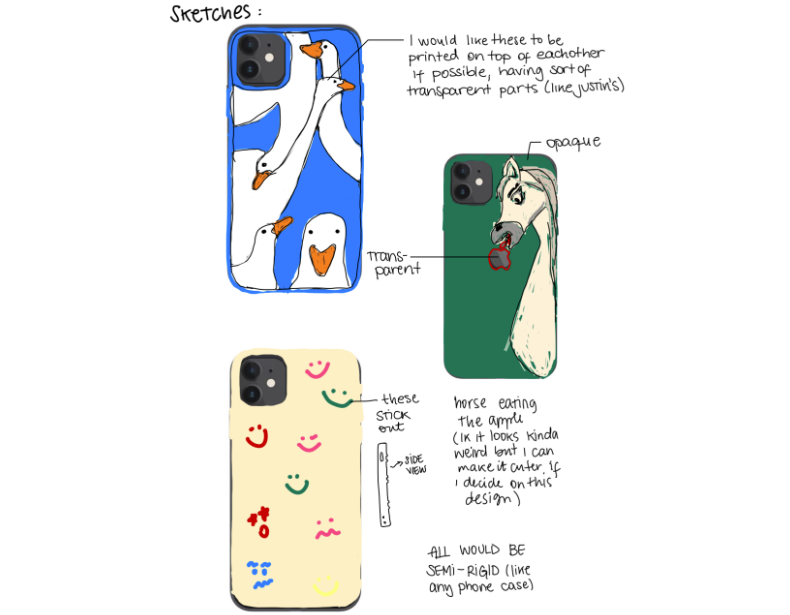
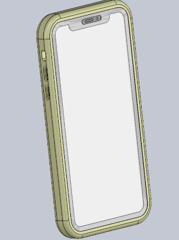
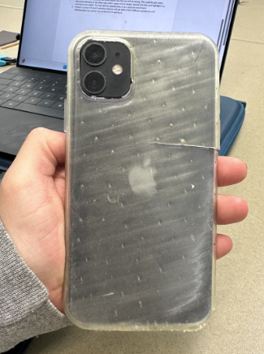
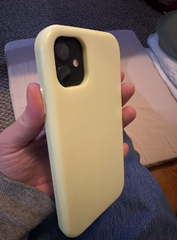
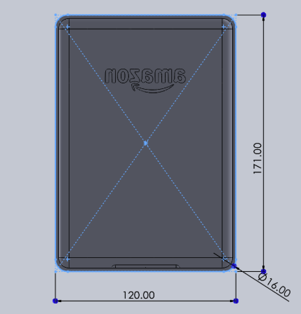
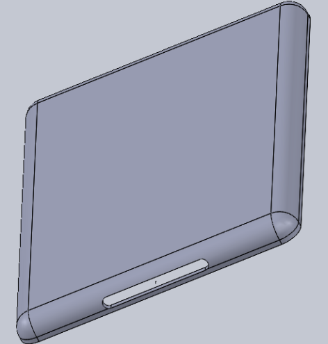
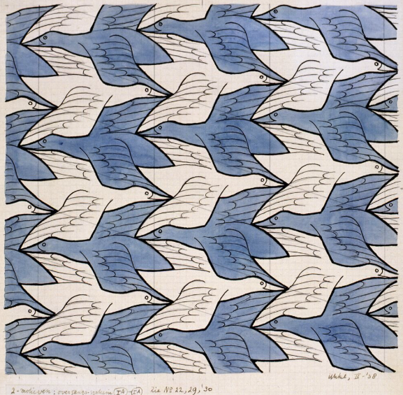
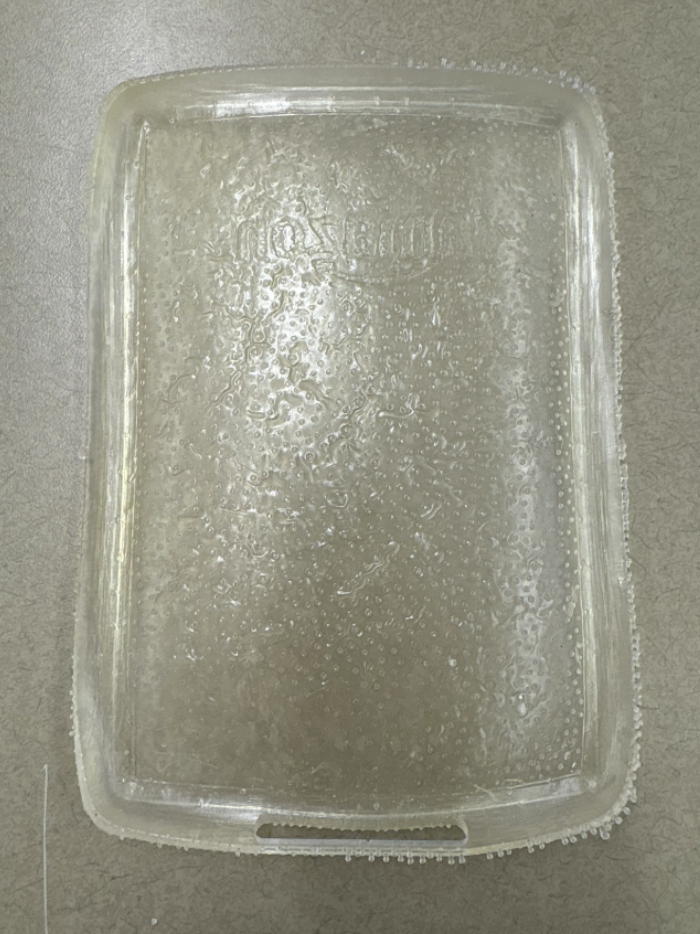
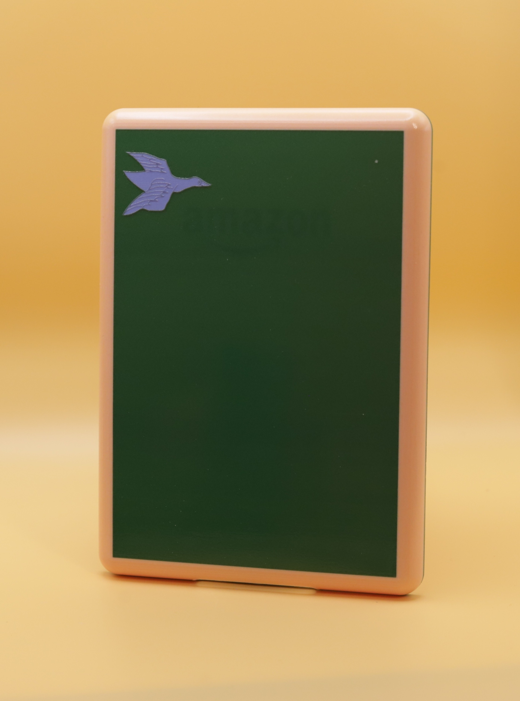
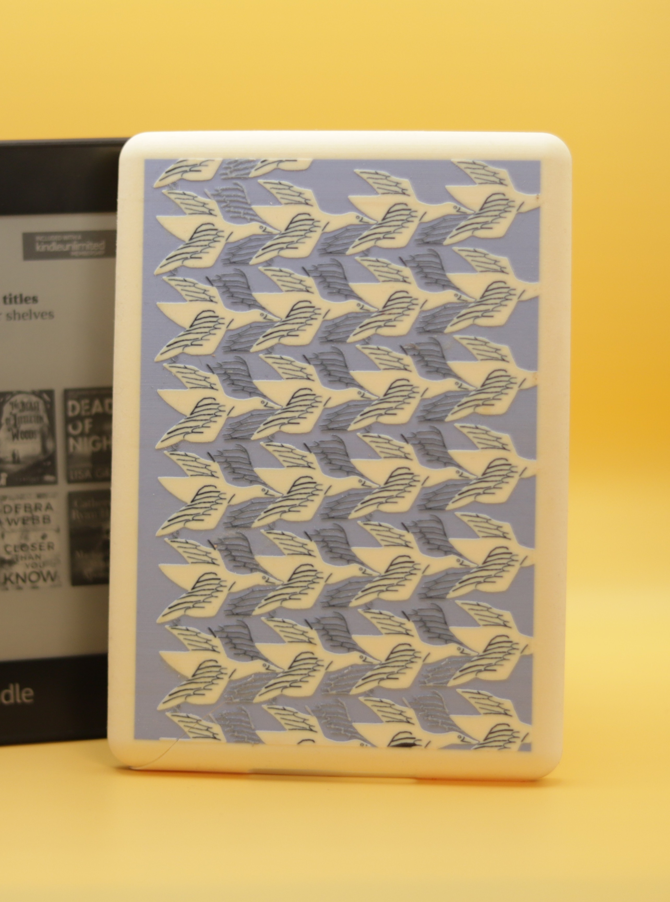

For my DSGN 348 Advanced Topics: Rapid Prototyping final project, I designed and prototyped a custom-fit case for my Kindle using an iterative product development process. I initially began with a phone case design but pivoted to a Kindle case after realizing I had more personal motivation and need for it.
This project is the physical compilation of hours of ideating, hand sketching, CAD, and prototype testing. At first, I started working on a phone case, for which I came up with the following designs:

Hand-drawn iPad Sketches for Phone Case
I began by downloading an iPhone 11 CAD model from GrabCAD and placing it into an assembly with a larger rectangular block to represent the case. The block was made 4mm wider and longer, and 2mm taller than the phone to allow for a 2mm wall thickness. I aligned the phone and case using a coincident constraint on their top center faces, then used a cavity feature to hollow out the case interior to match the phone’s shape. I filleted the edges, removed excess material, and added button cutouts by sketching on the sides and extruding features based on the phone model.
Iterative Prototyping
I first prototyped the case using FormLabs Flexible80 resin. It fit poorly and was too flimsy.
I iterated by switching to a stronger PolyJet material (PLXA9985-DM), which significantly improved the fit and structure.

Phone case and phone assembly

Flexible80 resin case

PLXA9985-DM phone case iteration
Then, I found myself not feeling inspired for this project, and I realized it was because I really love the phone case I currently have, and I did not want another one. So I decided to make a case for my Kindle, which I needed one for. I went through the exact same process with this case: found a model online of the kindle, created a cavity in an assembly, printed in Flexible80, and then in PLXA9985-DM.

Kindle Case Dimensions

Kindle Case CAD
After I finished modeling the case shell, I started thinking about which one of the three designs I wanted for the back of the case. I decided to not go with any of those but rather a patterned design, which I thought would be simpler. The design I chose was based on an art piece made by M.C. Escher called "Day and Night".

Day and Night
By M.C. Escher
I printed the first iteration with Flexible80 resin, and as expected the case came out to be too big and flimsy, and broke pretty easily. My second Iteration was made of PLXA9985-DM to test some colors on the surface to see if I liked them, and tested one bird to see how it looked.
Overview of User Feedback
Based on user feedback, I decided to add more material on the side walls of the case (on design 2), i.e., make it taller, because it seemed to be too short. I also added the notches on the top face of the case so it would press fit firmly against the top face of the Kindle, since the second iteration raised concerns about being a little bit of a loose fit. This was a great addition to the design as it fixed the fit, and now it can go into the kindle and fit nicely in it, not too tight but not too loose.
Regarding the design, the only feedback I received was that it was too much of an overkill and that it seemed too hard, but users seemed to like it regardless. I received ideas on how to pattern the design, which helped me out tremendously.
Iterations

Flexible80 resin case

PLXA9985-DM case first iteration

PLXA9985-DM case second and final iteration
Key Takeaways / Conclusions:
I learned how to do linear patterns on features! I spent an excessive amount of time on the bird design. It was specially hard because I tried extruding single line splines and then thickened them. That took a very long time, and I had to them one by one. Then I decided to do one spline for the body of the bird, extruded it, and patterned it. Then I changed the color of the back face of the case to give a different color for the birds looking at the other side without having to do another body and pattern it. After that, I decided to use straight slots for the black thin lines on the birds, and extrude them to then linear pattern them and put them on top of the bird’s bodies to finish creating the whole bird.
Additionally, I became very comfortable with using both the FormLab resin and PolyJet printers, including how to use the desktop apps to finish configuring the print for materials, orientation of the print, etc. And setting up the machine so it’s ready to run, the cleaning of both machines, and the post-processing of the parts: putting in the washer, curing, and taking off supports for the resin-based ones, and waterjetting the ones that came out of the PolyJet printers.